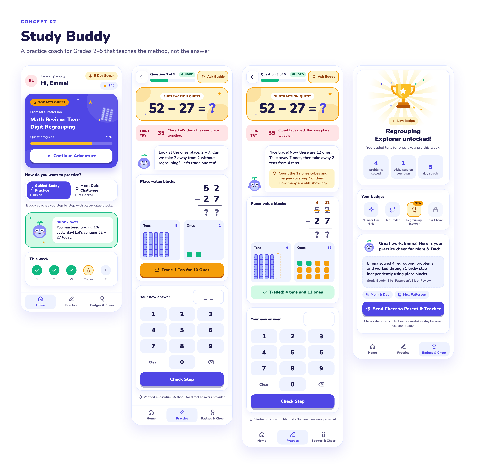
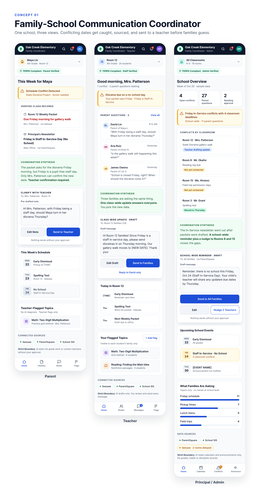

Exploratory interface designs
See how the concepts might feel to the people using them.
These mockups translate the proposed workflows into screens for families, educators, administrators, and learners. They help the team discuss the experience before choosing what to research and build.
UI concepts onlyFictional people and schoolNo live integrations
Important boundary: These images are design explorations, not a functioning product, legal-compliance certification, school endorsement, or proof that the proposed workflows will create the intended results. Labels, dates, records, and interactions are simulated.
Concept 01 · Personalized Study Buddy
Guided practice that teaches the method, then checks independence.
The screens separate guided practice from a no-hint mock quiz. They show one teacher-approved visual method, a fresh response check, and a positive summary that can reconnect the learner with parents and educators.
Numbering note: The desktop mockups were created under the earlier ordering and still display “Concept 02” inside the image. In the current mentor presentation, Study Buddy is Concept 1.

Desktop views
Concept 02 · Family-School Communication Coordinator
One problem, seen through three authorized roles.
The parent sees the conflicting records and prepares a question. The teacher sees repeated family questions and can draft one reviewed update. The principal or administrator sees school-wide conflicts without receiving private student details.
